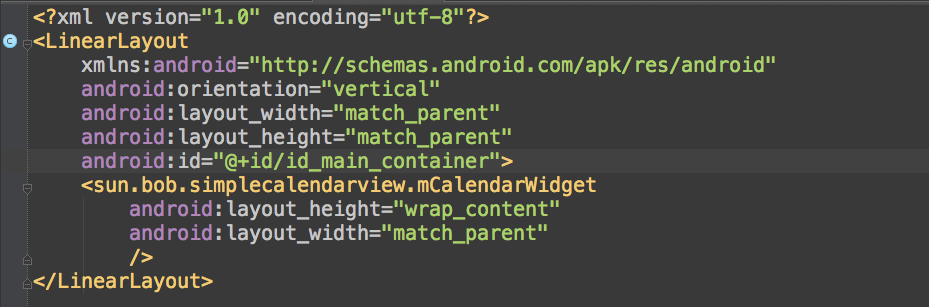
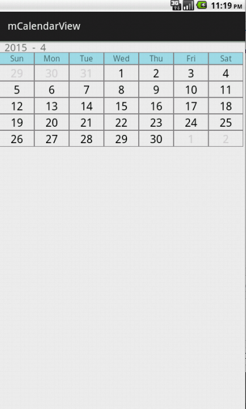

mCalendarView is a simple calendar widget for Android developers. This project is REALLY simple right now. And it's my first GitHub project. /** When I first meet the need to add a calendar in my project, I tried the build in widget provided by Google. And then I can NOT find out a way to mark or highlight a date. And due to I'm in China mainland, Google's official documents seems so far away from me. So, it suddenly comes to me, why not write one from scratch? First version is implement in pure Java. Not a single XML. It's ugly but fits my requirement. And this is the second version. I use the GridView instead of FrameLayout, which is used in the first-unpublished-version. This really helps me reduce a lot work. */
- To use it, just add it to your layout xml simply.
- To mark a date, just use - markDay(int day,in color,int style); in mCalendarView. Currently, there is only one mark style. I'll add more styles in next version.
- To add a ItemClickListener, just call - mCalendarView.setOnItemClickListener(...);
- Swipe to change month. As I just said, this project is really simple right now. I'll add more features. Any questions, feel free to leave a comment or wirte a E-mail to widekuan@outlook.com directly
Maybe some screenshots will help me out there. In your own xml file, you need to add it like this -
And you will get something like this -
